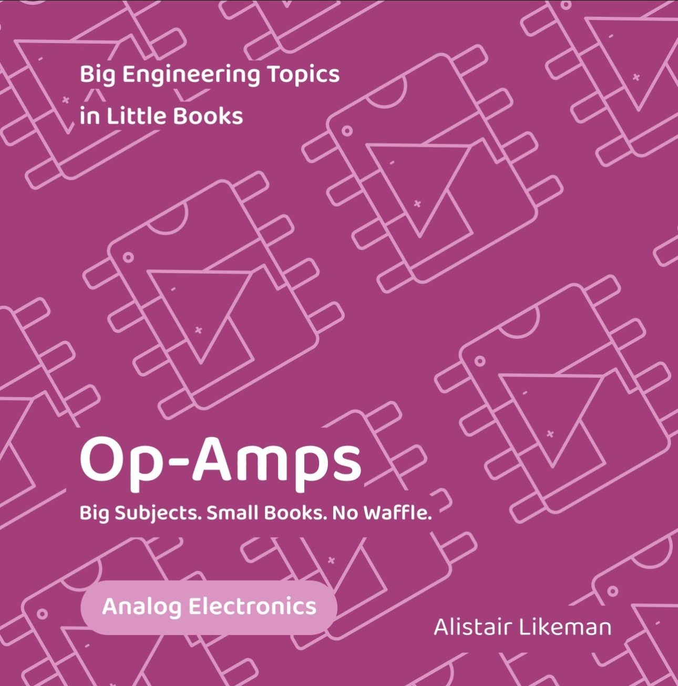

Op-amps are one of the most useful building blocks in electronics, but understanding them doesn't have to mean wading through pages of complex theory.

Twelve common op-amp circuits including amplifiers, comparators, integrators and filters.